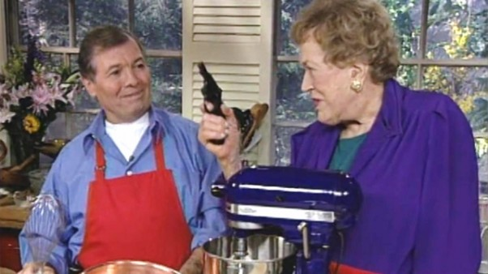

This Is How You Make Souffle

photo courtesy of PBS: http://www.pbs.org/food/features/julia-and-jacques-the-masters-of-the-kitchen/
You will need:
- 2 Tbs finely grated Parmesan
- 2 1/2 Tbs butter
- 3 Tbs flour
- 1 cup hot milk
- 1/2 tsp paprika
- a speck of nutmeg
- 1/2 tsp salt
- 3 grinds of white pepper
- 4 egg yolks
- 5 eggs whites (2/3 a cup)
- 1 cup (3 1/2 ounces) coarsley grated parmesan
Follow These Instructions Exactly
- Preliminaries: Roll the grated cheese in the buttered baking dish to cover the bottom and side,
and fasten on the aluminum collar (see Notes below). Preheat the oven to 400 F, and set the rack in the lower third level.
Measure out all the ingredients listed.
- The white sauce – béchamel: Stir and cook the butter and flour together in the saucepan over moderate heat for 2 minutes without coloring.
Remove from heat, let cool a moment, then pour in all the hot milk and whisk vigorously to blend.
Return to heat, stirring with a wooden spoon, and boil slowly 3 minutes. The sauce will be very thick.
Whisk in the seasonings, and remove from heat.
- Finishing the sauce base: One by one, whisk the egg yolks into the hot sauce.
- The egg whites: In a clean separate bowl with clean beaters, beat the egg whites to stiff shining peaks.
- the soufflé mixture: Scoop a quarter of the egg whites on top of the sauce and stir them in with a wooden spoon.
Turn the rest of the egg whites on top; rapidly and delicately fold them in,
alternating scoops of the spatula with sprinkles of the coarsely grated cheese –
adding the cheese now makes for a light soufflé.
- Ahead-of-time note: You may complete the soufflé to this point 1/2 hour or so in advance;
cover loosely with a sheet of foil and set away from drafts.
- Baking – 25 to 30 minutes at 400 F and 375 F. Set in the preheated oven,
turn the thermostat down to 375 F, and bake until the soufflé has puffed 2 to 3 inches over the rim of the baking dish into the collar,
and the top has browned nicely (see Notes below).
- Serving: As soon as it is done, remove the collar, then bring the soufflé to the table.
To keep the puff standing, hold your serving spoon and fork upright and back to back; plunge them into the crust and tear it apart.
Notes
For drama, you choose a dish that’s a little too small, so that the soufflé puffs into a collar.
When the collar is removed the puff holds itself 2 to 3 inches over the rim of the dish.
Use a double thickness of buttered foil that will rise 3 inches over the top of the dish;
secure the collar by inserting a straight pin head down – for easy removal.
When is it done? A soufflé baked in a dish should puff 2 to 3 inches over the rim, and the top should be nicely browned.
The puff should hold up when you release the collar just a little bit to check –
if the puff sags, rapidly refasten the collar and bake a few minutes more
If you want the puff to hold and the soufflé to stand a reasonable time, test it by plunging a skewer down into the side of the puff;
if wet particles cling to it the soufflé will be creamy inside and will not hold as long as if the skewer comes out almost clean.
The fateful decision is up to you.
adapted from Julia Childs Cheese Souffle Recipe.